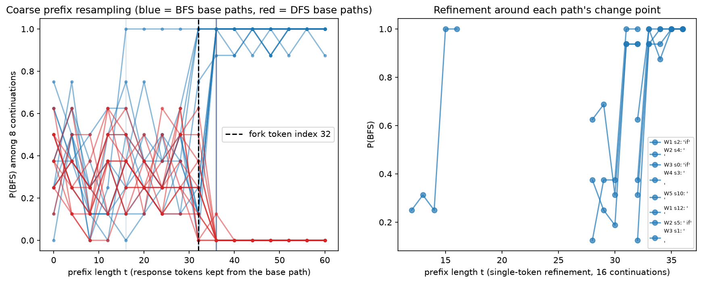
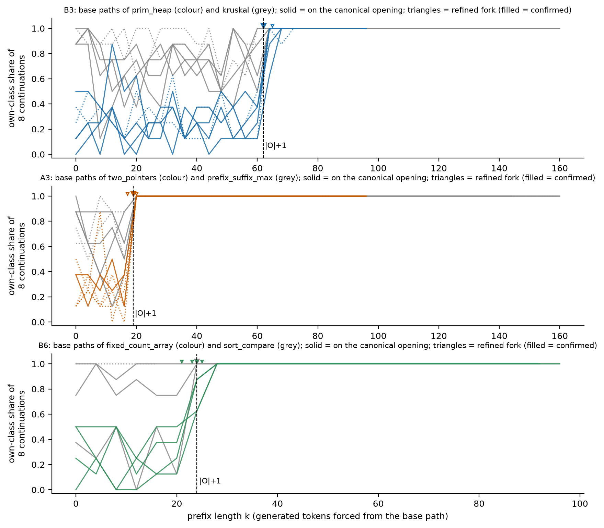
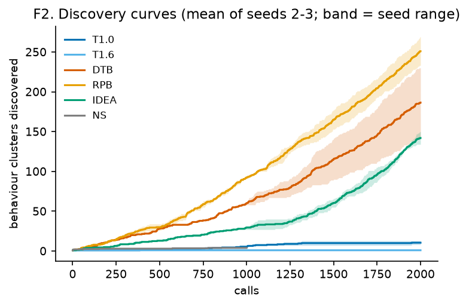

Ask a code model for a program and it writes the same algorithm every time.
An AI scientist spent 10 rounds and 56 experiments trying to make it write a different one. This page shows what was asked and what came out. Every number was checked against the run's stored result files.
The setup
Mostly Qwen3-8B with thinking off. One user message, no system prompt. The model returns a Python function, and the run labels which algorithm it is by executing it.
task T1 · grid path
The task accepts any valid path. The model writes BFS.
Prompt
Please solve the following programming task.
Task: write a Python function solve(grid, start, goal) that finds a path between two cells of a grid. […] Any valid path is accepted; it does not have to be the shortest. […]
Use only the Python standard library. Return only one ```python code block […]
Full task text
Task: write a Python function solve(grid, start, goal) that finds a path between two cells of a grid. grid is a list of equal-length strings with between 1 and 30 rows and between 1 and 30 columns; the character . is a free cell and the character # is a wall. start and goal are (row, col) tuples of 0-based indices. A move goes to one of the 4 orthogonal neighbours (up, down, left, right) and may not leave the grid or enter a wall. Return a list of (row, col) tuples that begins with start, ends with goal, and in which consecutive cells are neighbours and every cell is free. Any valid path is accepted; it does not have to be the shortest. If start equals goal and the cell is free, return [start]. If no path exists, or start or goal is a wall, return [].
Use only the Python standard library. Return only one ```python code block containing the function solve and any helpers, with no example usage and no explanation.
T1 grid path
BFS 797
800 samples across every temperature setting
T2 weighted shortest path
Dijkstra 797
800 samples
13 more textbook tasks
one algorithm 649
50 samples each: 50/50 on twelve, 49/50 on one
What it writes, every time (Qwen3-8B, real sample)
More randomness gives you more ways of writing the same algorithm.
my note 4 · R1E6✓holds on these tasks
Temperature and random seeds only rephrase.
Prompt · random seed
Here is a programming task. seed=d32qxk4nt43
+ the task
Prompt · word seed
Here is a programming task. seed=(horse chair roof love)
+ the task
Temperature swept over 0.3, 0.7, 1.0, 1.3, with top-k 10 and top-p 0.95, thinking off and on.
Grid path task: algorithm written, 100 samples per row
T = 0.3
BFS 100
T = 0.7
BFS 99
T = 1.0
BFS 100
T = 1.3
BFS 99
top-k 10 sampling
random seed string
BFS 100
shift vs baseline: +1 point
3–4 → 24–36distinct phrasings, T 0.3 → 1.3
1 → 1–2distinct algorithms
Same seed, 20 seeds: temperature changed the algorithm in 0 of 20, also with thinking on (R4E21).
Only true where the model has one answer. On tasks where it already writes two algorithms, temperature shifts the mix. It never adds a third.
Words that do move it
Naming an algorithm in the prompt is the strongest lever in the whole run, even when you name it in order to forbid it.
my note 1 · R1E1◐100% for 2 of 9
Just mention an algorithm and the model writes it. Not always 100%.
Prompt
Depth-first search (DFS) is one well-known approach to this task; implement any correct algorithm.
+ the task
The prompt explicitly says any algorithm is fine. Without the mention, every one of these is at 0%.
Programs that implement the mentioned algorithm (of 50)
DFS
100%
Bellman-Ford / SPFA
100%
Floyd-Warshall
86%
IDDFS
72%
A*
56%
bidirectional BFS
10%
Dijkstra on a grid
0%
Dial
0%
bidirectional Dijkstra
0%
Counts all programs, working or not: mention-DFS gives 50/50 DFS but only 15 of 50 pass the tests.
my note 5 · R2E9✓holds on the two path tasks
Ban the default and you get exactly one substitute.
Prompt
Do not use breadth-first search (BFS) for this task.
+ the task
Prompt
Do not use Dijkstra's algorithm for this task.
+ the task
grid path, no ban
BFS 100
grid path, BFS banned
DFS 8614
shortest path, no ban
Dijkstra 100
shortest path, Dijkstra banned
Bellman-Ford 8316
the defaultthe substituteother
Fragile. With 10 other wordings of the same ban, 62 of 100 are still BFS (R1E2). Only 5 of 12 other tasks obey a single ban at all (R3E13).
Show a solution in the prompt, then ban it: the model goes back to its own default in 24 of 31 cases (R3E14).
aside in my notes · R1E6◐works here, unstable later
A story that implies the approach works too.
Prompt
Here is a programming task. News spreads through a kingdom in rounds. In each round, every road carries a message from its source town to its destination town announcing how long the trip took so far plus the road's own travel time. Each town keeps only the shortest total it has ever heard. Once a whole round passes in which no town hears anything better, every town knows its true travel time.
+ the task
shortest path, plain
Dijkstra 99
with the story
Bellman-Ford 61Dijkstra 38
the defaultwhat the story describes
Later rounds got 15 of 50, and once 0 of 30, with similar stories.
Bans that don't work
Forbid the whole repertoire and the model keeps the algorithm and drops the name.
my note 5 · R2E9✓holds on the grid task
Ban five algorithms and the model writes a banned one anyway.
Prompt
Do not use breadth-first search (BFS), depth-first search (DFS), iterative deepening DFS (IDDFS), A* search or greedy best-first search for this task.
+ the task
Qwen3-8B under the five-name ban (real sample; comment wrapped here)
# Use a set to keep track of visited cells
visited = set()
# Use a queue for BFS-like traversal
# without using BFS
queue = [(start, [start])]
visited.add(start)
while queue:
current, path = queue.pop(0)
Grid path, 100 samples per ban list
no ban
BFS 100
1 name: BFS
DFS (allowed) 8614
4 names, DFS left free
37BFS 63
4 names incl. DFS
BFS 59DFS 2613
5 names
BFS 63DFS 36
0 of 100 comply
banned default, written anywayanother banned onean allowed algorithmother
Path-task result. On other tasks two-name bans are obeyed (k-th smallest 1.00, find duplicate 0.96).
Listing alternatives can backfire: on k-th smallest, a prompt banning five named algorithms gives 50 of 50 quickselect, one of the banned ones (R3E18).
my note 11 · R9E45◐true for most models
Most models rename; they don't obey.
Same five-name ban, 10 model configurations, 546 programs. Each program is checked twice: does the text avoid the banned names, and does the running code avoid the banned search order?
Qwen3-14B with thinking. No banned word anywhere. It is BFS.
from collections import deque
q = deque()
q.append((start, [start]))
visited.add(start)
while q:
current, path = q.popleft()
Last line of its reasoning
"Since I'm out of ideas, I'll proceed with the BFS code, assuming that the problem's restriction is a mistake, or that I'm missing something."
All 10 configurations pooled
546 programs
renamed 37168107
By model (runtime instrument)
Qwen3-8B think
renamed 2010
Llama-3.1-8B
renamed 21complies 27
Qwen3-14B
renamed 473
Qwen3-14B think
renamed 3565
Qwen3-32B
renamed 28714
Qwen3-32B think
renamed 47168
by the second instrument: 25 renamed, 35 comply
Gemma-3-27B
renamed 50
Qwen2.5-coder-32B
renamed 35123
Qwen3-8B
renamed 41banned name 59
Gemma-3-4B
renamed 473
avoids the names, runs a banned searchavoids bothstill uses a banned name
The quote in my notes starts with "most programs…".
The automatic tracer failed its own accuracy check (182 of 260 correct, needed 90%), so the run calls this descriptive.
A single ban is never renamed: with one name banned, compliance is 1.00 by name and by behaviour.
my note 10 · R8E44◐first half holds
Only Qwen3-32B with thinking gets past the ban, and not by picking "the most dissimilar algorithm".
Correct programs that avoid all five names (of 50)
Qwen3-32B, thinking
17
Qwen3-14B, thinking
7
Qwen3-32B, no thinking
4
7 other configurations
0
A "unit-weight Dijkstra" survivor. Every step costs 1, so the heap pops cells in BFS order.
pq = [(0, start[0], start[1])]
...
while pq:
dist, r, c = heapq.heappop(pq)
...
heapq.heappush(pq, (dist + 1, nr, nc))
What the 76 hand-read survivors actually are
unit-weight Dijkstra (= BFS order)
23
coordinate-key heap
18
grid Bellman-Ford
17
random-priority frontier
8
other known tricks
10
A Bellman-Ford survivor. This one really is a different search.
# Bellman-Ford-style relaxation algorithm
for _ in range(rows * cols):
updated = False
for i in range(rows):
for j in range(cols):
if distances[i][j] != -1:
My note said it picks unit-weight Dijkstra as the most dissimilar option. It is 30% of survivors, and in behaviour it is the nearest cousin of BFS, far only in name.
How well the 32B model "obeys" depends on who reads the code: 22%, 59% or 67% by three instruments.
new · R10E54＋was not in my notes
On bin packing the bigger thinking models do obey. Asked for something new, they return the textbook rule.
Same ban idea on a different task (online bin packing), scored exactly: which bin does the rule pick on 2,000 test states?
Instruction
Make a new algorithm (for online bin packing)
Qwen3-14B think
best fit 28
Qwen3-32B think
best fit 28
Five rule names banned: share that complies
Qwen3-8B · by name
complies 919
Qwen3-8B · by behaviour
complies 51renamed 49
14B / 32B think · by behaviour
complies 96
93–100% across cells
compliesbanned rule under another name
So renaming is not a fixed trait of a model. It depends on the task and on thinking.
0 of 1,143 one-shot programs beat best fit.
new · R3E18＋was not in my notes
A long "invent a novel algorithm" prompt gets claims of novelty.
Short version
Write a novel algorithm for this task, one you have not seen before.
+ the task
Two long versions (about 2,000 words of instructions) were also run on five tasks.
485 of 575answers claim a new algorithm
0are new
39% of the claimers contain no code. Of those with code, 75% are textbook algorithms.
The short version is still a useful knob: on substring search it gives naive 25, KMP 18, Rabin-Karp 4 where the default is naive every time (R4E19).
One generated token decides
The choice is not spread over the program. It happens at one token, long before the code looks like any algorithm.
my note 7 · R6E31 · gemma-3-4b-it◐holds, but it is in the code, not the CoT
Token 32 decides between DFS and BFS.
177 of 200 programs start with these exact 32 tokens
Thinking is off. There is no chain of thought here; the fork is in the code. The first token that visibly identifies the algorithm comes a median of 138 tokens later.
visited
DFS 1394
1,409 continuations
\nifqueue
BFS 449
463 continuations

Run figure, left panel. Keep the first t tokens of a program, resample the rest. A coin flip until token 32, locked after.
One model, one task. Not every program follows the shared opening (23 of 200 don't).
A simple steering edit at the fork toward BFS broke the programs (0 of 50 correct). A fitted edit worked (38 of 50), but rewording the prompt did better (49 of 50).
new · R7E35 · the paper's headline＋was not in my notes
Same thing in Qwen3-8B, on the three tasks where it writes two algorithms.
The three undecided tasks
MST weight
Kruskal 8019
trapped rain water
prefix/suffix max 6831
valid anagram
sort & compare 771310
Uncertainty about the algorithm once you know one token (bits)
before the token
0.82 – 1.02
MST weight, after
0.05
rain water, after
0.15
anagram, after
0.19

Run figure. Each line is one program: keep its first k tokens, resample the rest. Noise, then a snap to 100% at the dashed line.
Not universal. Weighted shortest path has no early fork, k-th smallest is decided before the first token, and Llama's grid task has no clean one.
new · R3E16＋was not in my notes
One token of the model's own code beats a ban.
Prompt
Do not use ⟨the default algorithm⟩ for this task.
+ the task
Then the answer is started for the model, either with a neutral def solve(…): line or with the first tokens of its usual program.
0.00 → 0.98k-th smallest: def line + indent, vs one more token (nums)
Share that writes the banned default anyway (50 each)
k-th smallest · neutral
ban holds 50
k-th smallest · own opening
default 49
two sum · neutral
9ban holds 41
two sum · own opening
default 50
components · neutral
ban holds 50
components · own opening
default 50
merge intervals · neutral
default 17ban holds 33
merge intervals · own opening
default 50
writes the banned defaultobeys the ban
Blocking the token doesn't work the other way round: veto the default's signature tokens and the model re-spells the same algorithm (R3E18).
my note 8 · R8E39◐weaker than my note
Heating only the deciding token: predictable, not powerful.
Raise the temperature at the one deciding token and leave every other token alone. The run predicted the resulting algorithm mix in advance.
0.01 – 0.05prediction error, 5 of 5 cases
0 of 5,543correct programs are a new algorithm
Connected components (model always writes union-find), of 50
normal
union-find 50
fork heated ×3.5
not DFS 473
fork heated ×7
not DFS 41DFS 9
costs 14 points of pass rate
Valid anagram (already split): effective number of algorithms
normal
1.78
fork heated
2.78
It only reweights what the token already weighs. Where the default leads by a lot, there is nothing to dial.
The experiment's own main claim is marked "not supported". Against simply predicting "no change", the forecast wins on only 4 of 6 cases (R8E43).
Poking inside the model
Activation edits can switch the algorithm. The awkward part: random edits at the same place often do just as much.
my note 3 · R1E4✓holds
Steering switches Dijkstra to Bellman-Ford. So does a random direction.
Add a vector to the model's activations at layer 18 while it reads the prompt. One vector is learned ("list options" minus "implement"). Two are random, same size.
On the grid task nothing moved: BFS in every arm until the model stopped producing working code.
Weighted shortest path, 100 samples per arm
no steering
Dijkstra 887
learned direction
23Bellman-Ford 5423
random direction 1
Dijkstra 532621
random direction 2
Dijkstra 8213
the defaultthe alternativefailed tests
Diversity gain: learned +0.65, random 1 +0.59. The difference is not distinguishable from zero.
my note 6 · R4E19◐true per task, not overall
Random noise on the task description ("plan noise") opens up some tasks.
For each sample, add a fresh random vector to layers 12–23, only at the positions of the task description, only while the prompt is read. Generation itself is untouched.
17.25 of 20seeds change algorithm with noise (shortest path)
0 of 20with temperature
Of 50 samples
k-th smallest · normal
full sort 50
k-th smallest · noise
full sort 241483
components · normal
union-find 50
components · noise
union-find 20DFS 29
find duplicate · noise
hash set 49
nothing
the defaultalternativeanotherfailed tests
Best knob on 2 of 6 tasks. Elsewhere a prompt wins: "be novel" on substring search, the story seed on shortest path, token vetoes on find duplicate. My who-wins-where list was exact.
Only the task description is sensitive. The same noise at the last prompt position: 0 of 526 correct programs off the default (R4E20).
Where it lands is predictable: the base model's second-favourite algorithm (3/3, 3/4, 5/7 forecasts hit). Whether a task moves at all is not.
Moves the algorithm on only 5 of 15 tasks, depends on how the dose is scaled, and did not survive thinking mode.
my note 9 · R8E41◐not more specific than R1E4
The circuit at the deciding token rewrites the algorithm. Five random components do nearly as much.
Find the components that carry the deciding token's choice (by exact patching; the faster AtP estimate missed the biggest one). Steer the top 5 during generation.
Correct programs of the target algorithm, of 30
MST → Prim · unedited
Prim 822
MST · top-5 circuit
Prim 29
MST · 5 random
Prim 237
components → DFS · unedited
29
components · top-5 circuit
DFS 29
components · 5 random
DFS 30
correct, target algorithmanything else
Cleaner than the round-1 steering in one way: the programs still pass.
The circuit beats random only at a lower dose, and only on connected components (30 vs 6).
Two real exceptions elsewhere: a push aimed at the runner-up gives 24/50 DFS vs 0/50 for random (R4E22); copying base-model states gives 21/49 heap vs 0/39 on top-k frequent (R5E24).
Where the single answer comes from
The base model, before instruction tuning, is less sure.
my note 2 · R1E5◐confirmed on 1 of 2 tasks
Instruction tuning concentrates the choice.
Same prompt tokens through Qwen3-8B-Base and the instruct-tuned Qwen3-8B. Correct programs only.
The base model rarely produces a working program at all (57 and 90 of 300), so its rows rest on few samples.
grid path · base
BFS 497
57 correct
grid path · instruct
BFS 200
200 correct
shortest path · base
Dijkstra 6324
90 correct
shortest path · instruct
Dijkstra 193
200 correct
the defaultthe alternative
Tuning sharpened a preference the base model already had. It did not create one here.
Not always: on minimum spanning tree the base model leans Prim and the tuned model writes Kruskal. Tuning flipped it (R8E43, R9E50).
Can it invent anything?
The question the run started from. Short answer: no knob produced a confirmed new algorithm. An external evaluator gets further than any knob.
new · R10E51–53＋was not in my notes
With an evaluator keeping the best programs, the 8B model beats the textbook rule.
Round 10 ran a FunSearch-style loop on online bin packing: generate a heuristic, score it, keep the good ones, mutate them. 2,000 model calls per arm.
Excess bins on held-out instances (lower is better)
best fit (textbook)
3.98%
model, no selection
3.98%
evolved, worst arm
2.43%
evolved, best arm
1.40%
FunSearch (published)
0.68%
Does it matter where the randomness is spent?
force a token at the "deciding" position
1.08×
force a token at a random position
1.00×
The run's own idea, "branch at the deciding token", was no better than branching anywhere (four seeds pooled).

Run figure, replication run. RPB = force a token at a random position, DTB = at the deciding position, IDEA = ask for a different idea, T1.0 / T1.6 = plain temperature, NS = no selection.
The one "novel" claim: the first run logged 8 programs as novel, all one idea (prefer a leftover that is a whole multiple of the item size). One reader's judgement; the replication found 0 of 40. The paper says "no confirmed new algorithm".
The two runs disagree wildly on the temperature arms (373 distinct behaviours vs 1), unexplained. The TSP version stopped early.
On textbook tasks, search found off-catalogue programs only on k-th smallest (78 of 2,500), all known techniques (R7E37).
The tasks
Defaults are what Qwen3-8B writes with thinking off.